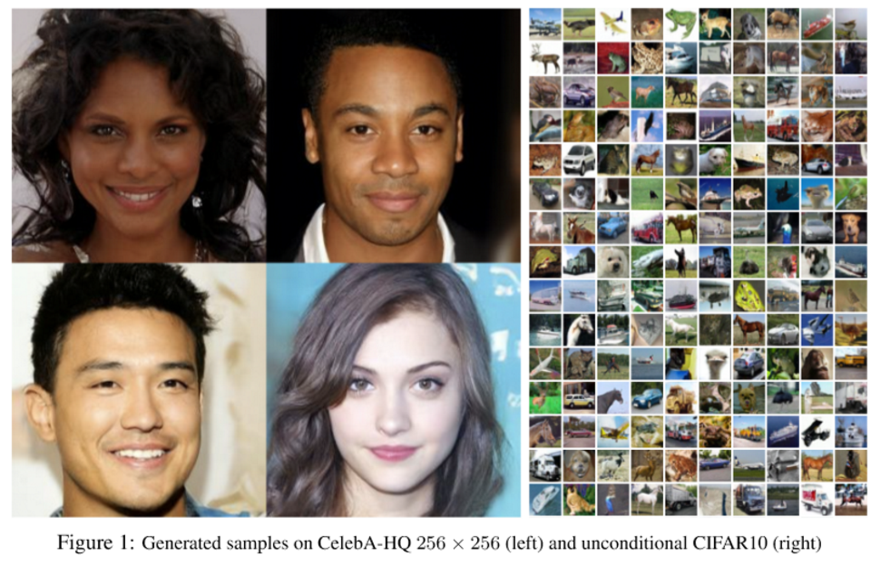
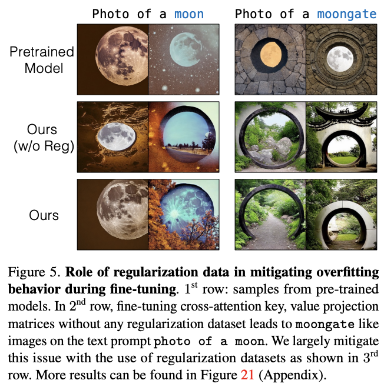

Information
Title: A Multi-Concept Customiziation of Text-To-Image Diffusion (CVPR 2023)
Reference
Code: Official:
Author: Seunghwan Ji
Last updated on Aug. 6, 2023
Custom Diffusion#
Abstract#
Large Scale Data를 학습한 Generate 모델이 뛰어난 성능을 보이는 추세
User의 Private한 Concept을 생성하고자하는 욕구는 여전히 풀지 못함
Custom Diffusion은?
기존 Diffusion 모델의 partial한 부분만을 학습시킴으로써 기존보다 더 빠른 finetuning 방식을 제안
Single Concept 뿐 아니라, Multiple Concept에 대한 학습이 가능
다양한 Fine tuned 모델을 하나의 모델로 Compress하는 방식을 제안
1. Introduction#
최근 Text-To-Image 모델들이 활발하게 연구 되어짐
단순한 text prompt 입력만으로 원하는 이미지를 생성해내는 수준까지 이름
하지만 이러한 모델들은 General한 이미지는 잘 생성하지만, User가 원하는 Private한 (=specific) Concept의 이미지는 생성해내지 못함
e.g. 행복한 우리 가족 사진, 우리집 강아지 뽀삐가 파리로 여행을 떠나는 사진 등
학습 과정중에 User의 Private한 데이터를 보지 못했기때문에 Model에게는 당연한 결과
Customization
몇장의 Concept을 포함하는 이미지만으로 Pretrained 모델을 finetuning하는 방식
In Dreambooth, Personalization
목표
학습하고자하는 Private한 Concept의 이미지를 잘 생성해내야함
기존에 학습되었던 General한 이미지를 Finetuning한 후에도 잘 생성해내야함
Customization이 어려운 이유
학습을 진행하다보면 기존에 학습했던 Concept을 잊어버리거나 왜곡해버림 → Language Draft
새로운 Concept에 대해 모델이 Overfit 되어서 결과물의 Variation이 낮아짐
좀더 나아가 Single Concept 뿐 아니라 Multiple Concept에 대한 Finetuning 또한 어려움
Custom Diffusion은?
Text로 Condition을 생성해내는 과정 중 특정 부분만을 학습
General Concept의 성능 유지를 위해 real image와 해당 이미지의 caption을 regularization Data로 사용
fine tuning동안 새로운 augmentation 기법을 소개
Multiple concept의 학습 방식을 제안
3. Method#
Single Concept Fine-tuning#
Backbone으로 Latent Diffusion Model을 채택
(L)DM의 학습 Concept

Fig. 132 Equation 0#
\(x_{t}\) : time t 시점에 Noise가 섞인 이미지
\(t\) → timestep
\(c\) → conditioning feature (text, image 등)
text나 image를 바로 사용하지않고 latent space로 embedding된 값을 사용 (using CLIP)
ε → noise
\(ε_{θ}\) → \(x_{t}\)에 낀 noise ε를 예측해내는 모델
즉, \(x_{t}\)에 낀 noise ε를 예측해내는 모델을 학습
이러한 LDM 모델을 fine tuning할때는 Model의 모든 Layer에대해 update하는게 기본
하지만 이러한 finetuning 방식은 Resource가 비효율적으로 많이들고, 새로운 Concept 이미지에 overfitting되기 쉬움
Finetuning 과정 중 모델의 Weight 변화량을 체크
 Fig. 133 Delta of Weight while Training#
다른 부분에비해 Cross Attention 연산의 Wegith 변화량이 가장 큼
Cross Attention
{kind=link}
{kind=link}
Fig. 134 Fig.4 Cross Attention#
Cross Attention → Image latent에 text condition을 주입하는 Attention Mechanism
Query → image latent / Key, Value → text condition latent
모델 전체 Parameter에 단 5%부분만을 차지
이 중 new concept을 의미하는 Text \(V^{*}\)이 포함되는 \(W^{k}\)와 \(W^{v}\)만 학습. 나머지는 Freeze
Fine Tuning할 때 \(V^{*}\)은 실제로는 잘 쓰지않는 단어로 사용하고 “A [\(V^{*}\)] [Class]” 형식으로 이미지를 Captioning한 후에 학습
또 Finetuning중에 일반적인 concept을 잊어버리는 Language Draft 현상이 있을수있음
Language Draft
 Fig. 135 Fine tuning 후에 Photo of a moon 이미지를 생성하면 Finetuning했던 Moongate 이미지를 생성해버림#
{kind=link}
Fine tuning 후에 Photo of a moon 이미지를 생성하면 Finetuning했던 Moongate 이미지를 생성해버림
이러한 현상을 방지하기위해 Real world의 Image에서 target text class prompt와 유사한 200장의 이미지를 Regulalization 이미지로 같이 학습
text prompt가 유사하다 = CLIP에서 추출한 text feature space상의 Vector가 Similar하다
Multiple-Concept Compositional Fine-tuning#
Joint Traning on multiple concept
각각의 Concept을 갖는 이미지에 대해 각각 rare한 key를 부여해 동시에 학습
(\(V^{i}\), for \(i\) is # of concepts)
Constrained optimization to merge concepts
각각 Single Concept으로 학습된 weight를 merge

Fig. 136 Equation 4#
\(W_0\) → pretrained model의 Key, Value embedding Weight
~~(Appendix A에는 \(W\)라고 나와있는데 오탈자일 가능성 있음)~~
\(C_{reg}\) → regularization 이미지의 Caption의 Embedding 값을 모두 뽑아 Concat
⇒ \(C_{reg}\)에 Pretrained Weight를 곱한 값과의 norm을 계산했을때 값이 가장 작은 Weight를 return
“N개의 Concept에 대해 Cross Attention이 모두 잘 동작하는 W 값을 찾아 하나만 사용하자”
Training Details#
single concept의 경우 250 steps, two-concept의 경우 500 steps
batch : 8, learning rate : \(8*10^{-5}\)
random resize + prompt 추가 (very small, far away, zoom in …) (new augmentation technique)
4. Experiments#
Single Concept Finetuning
Qualitative Evaluation

Fig. 137 Qualitative Evaluation#
Quantative Evaluation (Text Alignment, Image Alignment, KID)
text alignment : prompt에 얼마나 대응되는 이미지를 생성해냈는가
image alignment : training image의 concept을 얼마나 잘 표현해냈는가

Fig. 138 Table 1#
⇒ 정성적, 정량적 평가 모두 Custom Diffusion > Dreambooth, Textual Inversion
Multiple Concept Finetuning

Fig. 139 Multiple Concept Finetuning#
Joint Training > Optimization by custom diffusion > Dreambooth
Human Preference Study

Fig. 140 Table 2#
Custom Diffusion (partial) vs Baseline(Textual Inversion, Dreambooth, CustomDiffusion(all))
Text-Alignment, Image-Alignment 모두 Custom Diffusion (partial)을 선호
Textual Inversion은 Image Alignment는 Custom Diffusion 선호도와 비슷하지만 Text Alignment수치를 보면 Custom Diffusion이 매우 높아 Overfitting된 경향이 있음
Ablation Study
{kind=link}
ㅌGen : real image 대신 generate된 이미지를 regularization 이미지로 사용
Overfitting 없이 가장 좋은 수치는 Augmentation + Regulatization image as Real world Image
5. Discussion & Limitation#
customizing이 가능하고 training resourse가 매우 적은 finetuning 기법 소개
{kind=link}
Fig. 142 Limitation Of Custom Diffusion#
비슷한 category의 object에 대해서는 joint training, merge 모두 잘 동작하지 않음